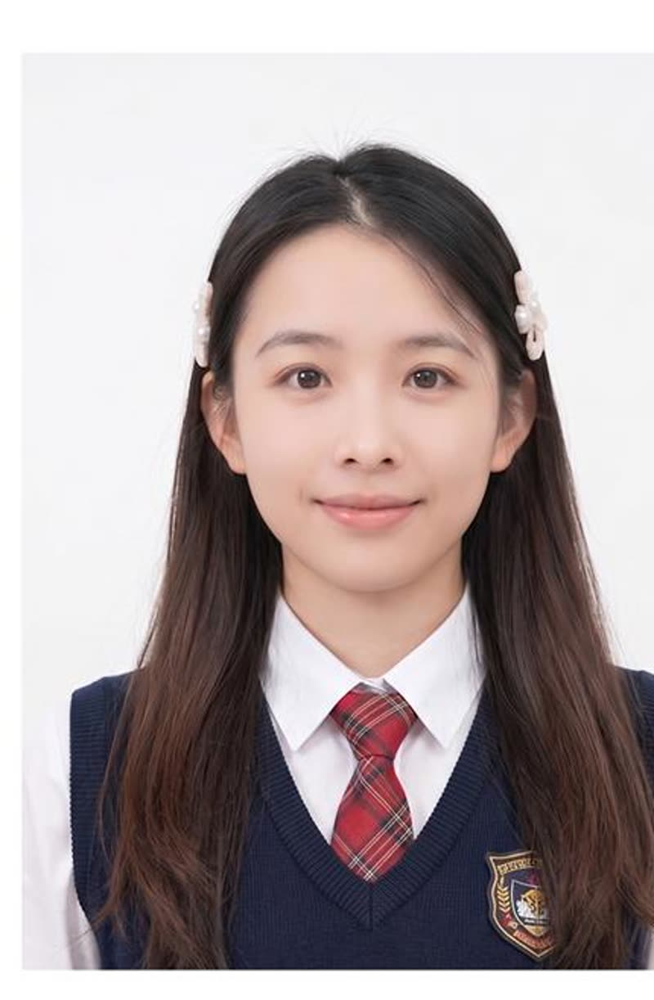

AI 视觉设计
AI 创意图像、品牌视觉方案、商品内容与视觉流程优化
VISUAL / AI / BRAND DESIGNER
我是庄庄，一名视觉设计师、AI 设计师与品牌设计师。
用策略、审美和新工具，完成从概念到商业落地的视觉表达。
PROFILE / EXPERIENCE

ABOUT ME
我拥有品牌、电商与 AI 视觉的复合经验。擅长从商业目标中提取视觉方向， 并将创意转化为能在真实渠道中持续使用的内容系统。
AI 创意图像、品牌视觉方案、商品内容与视觉流程优化
电商平台视觉、产品拍摄、页面排版与营销内容设计
SELECTED PROJECTS
从商品视觉到品牌表达，以大画面呈现真实创作与商业落地能力。

AI VISUAL · E-COMMERCE

CAMPAIGN · KEY VISUAL

AMAZON · CONTENT SYSTEM

BEAUTY · ART DIRECTION

AI IMAGE · PRODUCT STORY

3D VISUAL · COMMERCE
CORE STRENGTHS
BRAND DESIGN
从定位、色彩、字体到关键视觉规则，形成可被长期复用的品牌资产。
AI ART DIRECTION
把生成、筛选、合成与精修纳入完整工作流，以审美判断控制最终质量。
E-COMMERCE
把产品参数转译为清晰卖点，用视觉节奏推动理解、记忆与购买决策。
CREATIVE DIRECTION
从策略拆解到视觉落地，让概念既有辨识度，也能适配真实渠道与交付节奏。
START A CONVERSATION